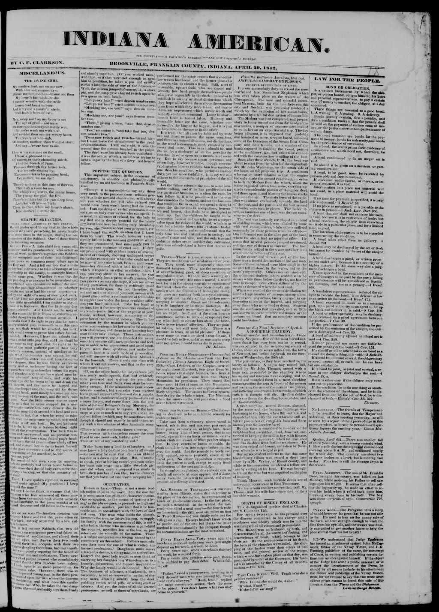

HN-138 · April 29, 1842 · Disasters, Accidents & Emergencies > Explosions, Industrial & Workplace Disasters > Steam boilers and pressure-vessel explosions
Medora explosion seed dated 29 April 1842, yet putative Baltimore American victim obituaries are 15–16 April.
Class: Metadata/identity (M)
Recorded difference/concern: Medora explosion seed dated 29 April 1842, yet putative Baltimore American victim obituaries are 15–16 April.
Assessment: Impossible chronology if same disaster; article identity/date unverified. Could be seed date or different event.
Source links: https://usgenwebsites.org/MDBaltimore/obits/obit_v.html
Authentic images retrieved from Hoosier State Chronicles (Indiana State Library). Article crops are located using the archive's own OCR word coordinates and rendered at native crop resolution; article clips are assembled from the archive's own article-block images; page images marked "archive tiles" are stitched from the archive's own tiled page service at its 256-px tile cap; page images marked "issue PDF" are single pages rasterised from the archive's own issue PDF, with the page chosen by matching the headline against the PDF's text layer; page scans are reduced-size access renditions. No images were generated, mocked, or retouched.

Status: Archive images acquired
Authentic archive-owned image renditions were retrieved for this record and are displayed above. The source-acquisition manifest preserves the original pre-acquisition feasibility assessment.
URL (preserved verbatim): https://newspapers.library.in.gov/?a=d&d=IA18420429.1.1
Saved research report: Historical_Newspaper_Event_Research_128-152_2026-10-22.md
Evidence note: A newspaper report means a historical publication made a claim; it does not establish that claim as fact. Contemporary reporting is separated from later scholarly context and our own assessment.